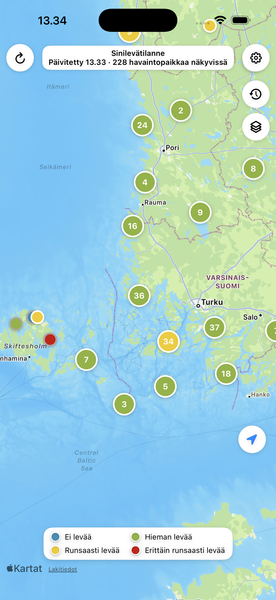
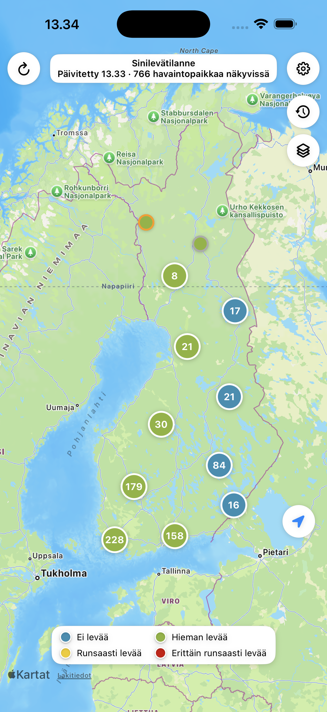
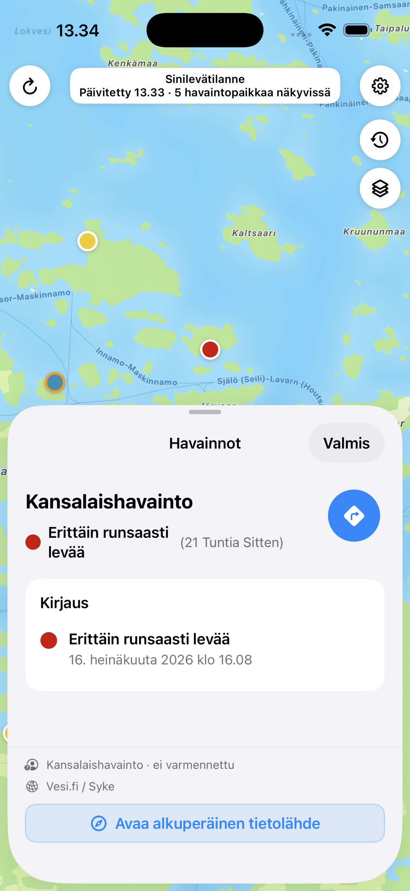

Kartalla näkyvät havainnot
Napauta kartan yläpalkkia nähdäksesi nykyisellä kartta-alueella olevat havaintopaikat listana.
Ilmainen · Ei mainoksia
Sinilevätilanne näyttää enintään seitsemän vuorokauden ikäiset sinilevähavainnot Apple Maps -kartalla iPhonessa, iPadissa, Apple Watchissa ja Macissa.

Kartta ja havaintolista
Värikoodit näyttävät levämäärän. Kartan yläpalkista avautuu lista näkyvissä olevista havaintopaikoista.
Napauta kartan yläpalkkia nähdäksesi nykyisellä kartta-alueella olevat havaintopaikat listana.
Ei levää, hieman levää, runsaasti levää ja erittäin runsaasti levää erottuvat sekä värillä että tekstillä.
Havaintokortti kertoo paikan, levämäärän, ajankohdan, ylläpitäjän ja alkuperäisen tietolähteen.
Keskitä kartta omaan sijaintiisi, vaihda kartan ulkoasua tai avaa reittiohjeet havaintopaikalle.
Asetusten tai havaintokortin pluspainike avaa Järvi-meriwikin Havaintolähettimen.
Asetuksista voit lähettää Sinilevätilanteen App Store -linkin eteenpäin.

Karttanäkymä
Havaintopaikat ryhmitellään kartan mittakaavan mukaan. Karttaa liikuttamalla ja lähentämällä voit tarkastella järviä, rannikkoa ja saaristoa.

Havaintokortti
Kansalaishavainnot on merkitty varmentamattomiksi. Havaintokortista voit avata alkuperäisen tietolähteen, reittiohjeet tai Järvi-meriwikin Havaintolähettimen.
Laitetuki
iPadissa kartan rinnalle voi avata havaintolistan. Apple Watch näyttää kartan ja 20 uusinta havaintoa. Mac-versio tuo kartan, haun, havaintosivupalkin ja kausihistorian työpöydälle.
Kartta, havaintolista, havaintojen tiedot ja reittiohjeet.
Laaja karttanäkymä ja piilotettava havaintosivupalkki.
Kartta sekä 20 uusinta havaintoa ranteessa.
Paikkahaku, havaintosivupalkki, kausihistoria sekä vaalea, tumma, satelliitti- ja hybridikartta macOS 14:ssä tai uudemmassa.
Tietolähteet
Sinilevätilanne kokoaa Järvi-meriwikin seurantahavainnot ja Vesi.fi:n kansalaishavainnot samaan näkymään. Sovellus ei ole viranomaispalvelu eikä anna terveydellistä arviota. Tilanne voi muuttua nopeasti, joten tarkista veden tila myös paikan päällä.
Saatavilla App Storesta
Sovellus ei sisällä mainoksia, käyttäjätilejä tai seurantaa.